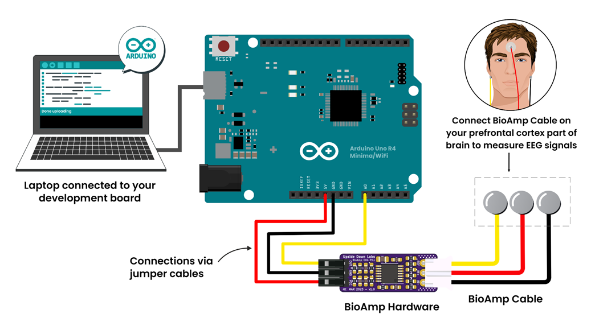

Brain (EEG) BioAmp Arduino Firmware#
Apa itu Elektroensefalografi (EEG)?#
Elektroensefalografi (EEG) [1] adalah metode untuk merekam elektrogram dari aktivitas listrik spontan otak. Sinyal bio potensial yang terdeteksi oleh EEG telah terbukti mewakili potensial pascasinapsis dari neuron piramidal di neokorteks dan alokorteks. Biasanya non-invasif, dengan elektroda EEG ditempatkan di sepanjang kulit kepala (umumnya disebut “EEG kulit kepala”) menggunakan sistem Internasional 10–20, atau variasinya. Interpretasi klinis rekaman EEG paling sering dilakukan dengan inspeksi visual dari pelacakan atau analisis EEG kuantitatif
Untuk mengetahui lebih lanjut tentang EEG: https://en.wikipedia.org/wiki/Electroencephalography
Sistem Internasional 10–20 adalah metode standar untuk menempatkan elektroda EEG di kulit kepala sehubungan dengan korteks serebral otak. Posisi elektroda diberi label dengan huruf (seperti Fp, F, T, C, P, O, dan Z untuk garis tengah) dan angka (ganjil untuk hemisfer kiri, genap untuk hemisfer kanan). “10” dan “20” merujuk pada persentase jarak antara elektroda berdasarkan ukuran kepala. Titik referensi kunci seperti nasion, inion, dan titik preaurikular digunakan untuk penempatan yang akurat. Sistem ini membantu memastikan rekaman EEG yang konsisten, dapat diulang, dan dapat dibandingkan. Versi yang lebih detail seperti sistem 10–10 atau 10–5 memberikan resolusi yang lebih tinggi dengan menambahkan elektroda ekstra.
Untuk mengetahui lebih lanjut tentang sistem Internasional 10–20 kunjungi di sini.
Untuk siapa ini?#
Siapa pun yang menggunakan Hardware BioAmp untuk pertama kali — baik Anda siswa, hobiis, pendidik atau hanya penasaran. Tidak perlu pengalaman!
👉 Untuk mempelajari Hardware BioAmp kami, lihat halaman hardware.
Step-by-Step Setup Guide#
Dengan hardware di tangan Anda, Anda hanya beberapa langkah lagi untuk membuka potensinya sepenuhnya — mari siapkan perangkat lunaknya!
Step 1: Downloading GitHub Repository for Hardware#
Ini adalah kode yang dibutuhkan Arduino Anda untuk membaca sinyal Otak (EEG).
Anda memiliki dua cara mudah untuk mendapatkan kode yang akan membantu Anda membaca sinyal EEG Anda:
Cukup Unduh (direkomendasikan untuk pemula)
Kunjungi halaman GitHub: Brain BioAmp Arduino Firmware
Klik tombol “Code” hijau > Download ZIP
Ekstrak folder dan simpan di tempat yang mudah ditemukan.
Kloning menggunakan Git (untuk pengguna yang mahir teknologi)
Instal Git untuk OS Anda: https://git-scm.com/
Klon repositori GitHub ini menggunakan
git clone https://github.com/upsidedownlabs/Brain-BioAmp-Arduino-Firmware
Step 2: Application Required#
Sebelum mulai menggunakan kit, silakan unduh atau buka yang berikut:
Arduino IDE
Kami membutuhkan Arduino IDE untuk mengunggah kode ke papan Arduino Anda.
Tautan untuk mengunduh IDE untuk OS Anda: https://www.arduino.cc/en/software
Situs Web Chords
Kami akan menggunakan Situs Web Chords untuk memvisualisasikan Sinyal Otak!
Buka situs web ini: Chords Web
Step 3: Connect Your Hardware#
Hubungkan Hardware ke Arduino UNO menggunakan kabel jumper.
Ikuti diagram wiring yang tepat dari dokumentasi hardware dari hardware yang Anda gunakan.
Hardware yang kompatibel dengan Firmware Brain BioAmp:
Untuk program
Fixed SamplingdanEEG Filterpapan Arduino apa pun dapat digunakan.
Note
Untuk eksperimen yang diberikan di bawah, Anda akan memerlukan : Papan Arduino UNO R4 Minima / WiFi
Itu seperti merakit puzzle!
Step 4: Persiapan Kulit dan Penempatan Elektroda#
Menggunakan Elektroda Gel:
Siapkan kulit Anda
Pilih area di mana Anda akan menempatkan elektroda.
Bersihkan kulit menggunakan swab alkohol atau Gel Nuprep untuk menghilangkan minyak dan sel mati — ini meningkatkan kejelasan sinyal.
Note
Butuh bantuan dengan persiapan kulit? Lihat panduan lengkap di sini: Panduan Persiapan Kulit
Penempatan elektroda yang dijelaskan bukan universal. Selalu rujuk ke bagian “Hubungkan Hardware Anda” untuk persyaratan spesifik eksperimen Anda
Untuk EEG Prefrontal (untuk aktivitas otak frontal), hubungkan kabel ke elektroda, lalu tempelkan elektroda ke kulit (lihat diagram di bawah):
IN+(kabel merah): Tempatkan di tengah dahi (di atas jembatan hidung).IN–(kabel hitam): Tempatkan di sisi kiri dahi (di atas alis kiri).REF(kabel kuning/putih): Tempatkan di belakang telinga (area tulang).
Untuk EEG Korteks Visual (untuk aktivitas belakang otak), hubungkan kabel ke elektroda, lalu tempelkan elektroda ke kulit (lihat diagram di bawah):
IN+(kabel merah): Tempatkan di sisi kanan lobus oksipital (belakang kepala).IN–(kabel hitam): Tempatkan di sisi kiri lobus oksipital.REF(kabel kuning/putih): Tempatkan di belakang telinga (seperti di atas).
Pastikan sisi lengket elektroda menyentuh kulit Anda dengan kuat.

Penempatan EEG#
Menggunakan BioAmp Band: Untuk BioAmp Band, rujuk ke dokumentasi berikut: Menggunakan BioAmp Bands
Step 5: Cara Mengunggah Kode ke Arduino#
Buka folder yang Anda unduh: Brain-BioAmp-Arduino-Firmware
Di dalamnya, Anda akan menemukan beberapa subfolder.
Pilih folder untuk eksperimen yang ingin Anda coba. (Untuk pemula: mulai dengan yang pertama dan lanjutkan langkah demi langkah melalui yang lain untuk pengalaman belajar yang lebih baik )
Di dalam folder itu, buka file .ino menggunakan Arduino IDE
Sebagai contoh:
Untuk mencoba sinyal mentah: buka
01-fixed-sampling.inoUntuk mencoba sinyal yang difilter: buka
02-eeg-filter.ino
Note
Anda akan menemukan semua eksperimen yang tercantum di bawah, masing-masing dengan instruksi langkah demi langkah. Gulir ke yang sedang Anda kerjakan untuk memulai dengan setup yang tepat.
Hubungkan Arduino Anda
Hubungkan papan Arduino ke port USB komputer Anda menggunakan kabel USB.
Tunggu sistem operasi menginstal driver USB yang diperlukan.
Di Arduino IDE:
Pergi ke Tools > Board > Arduino UNO pilih model papan Anda (misalnya, “Arduino UNO R4”)
Pergi ke Tools > Port > [pilih port COM yang benar]
Verifikasi (Kompilasi) Sketch
Klik tombol “✔️ Verify” (atau tekan
Ctrl + R).Tunggu “Done compiling.” Jika muncul kesalahan, periksa kembali Anda membuka file .ino yang benar.
Klik tombol ✓ Upload (atau tekan
Ctrl + U) untuk mengirim kode ke Arduino.IDE akan mengkompilasi lagi dan kemudian mengirim kode ke papan Anda.
LED onboard yang diberi label “L” mungkin berkedip selama upload. Ketika Anda melihat “Done uploading”, firmware baru sedang berjalan.
Buka Serial Monitor dan Serial Plotter (Opsional)
Untuk serial monitor dan plotter, kami merekomendasikan menggunakan Chords Web. Namun, jika Anda belajar mengembangkan, Anda mungkin juga menemukan opsi ini berguna.
Untuk Serial Monitor: Di IDE, klik Tools → Serial Monitor (atau tekan
Ctrl + Shift + M).Pastikan baud rate di kanan bawah Serial Monitor disetel ke
115200(atau apa pun yang ditentukan oleh Serial.begin(115200); sketch).Anda harus mulai melihat baris-baris angka. Itu adalah pembacaan Anda.
Untuk Serial Plotter: Di IDE, klik Tools → Serial Plotter.
Anda harus mulai melihat plotting grafik dan memvisualisasikan gelombang.
Important
Ingat untuk menutup Serial Monitor & Serial Plotter di Arduino IDE sebelum memulai Chords Visualizer.
Step 6: Visualisasikan Sinyal Otak Anda!#
Buka situs web ini: https://chords.upsidedownlabs.tech
Klik: Visualize Now → lalu pilih Serial Wizard.
Pilih port COM yang benar (sama dari Arduino IDE).
Klik Connect.
Important
Ingat untuk menutup Serial Monitor di Arduino IDE sebelum memulai Chords Visualizer.
Selalu cabut charger laptop saat testing. Mengapa? Pengisian dapat memperkenalkan noise 50 Hz yang mempengaruhi sinyal.
🎉 Sekarang duduk diam dan biarkan pikiran Anda mengembara—atau berkedip dan geser pandangan Anda—Anda akan melihat gelombang EEG real-time di layar!
Mari jelajahi semua eksperimen langkah demi langkah#
1. Fixed Sampling
1. Tujuan & Gambaran Program
Sketch Fixed Sampling memperoleh data EEG/biopotensial mentah dari ADC Brain‑BioAmp pada tingkat konstan yang ditentukan pengguna. Dengan menggunakan interupsi timer hardware daripada loop delay, ini menjamin sampel yang terpisah secara seragam—kritis untuk filtering digital yang akurat, analisis spektral, atau pipeline machine-learning hilir.
2. Cara Kerjanya
Inisialisasi Pin Sensor
Sketch menyetel pin input analog Arduino (misalnya, A0) untuk membaca nilai tegangan dari sensor BioAmp.
Set Tingkat Sampling
Timer (menggunakan
micros()ataudelayMicroseconds()) memastikan kita memanggilanalogRead(A0)pada interval yang tepat.
Cetak Nilai Mentah
Pengguna melihat fluktuasi tegangan mentah yang sesuai dengan gelombang otak.
Loop Selamanya
loop()berlanjut tanpa batas, terus membaca dan mencetak.
3. Lakukan Hardware
Rujuk wiring sesuai instruksi yang diberikan di Hubungkan Hardware
4. Unggah Firmware
Untuk proyek ini, navigasi ke folder repositori (Brain-BioAmp-Arduino-Firmware/01-fixed-sampling) dan pilih
01-fixed-sampling.ino.Untuk mengunggah firmware, rujuk ke Cara Mengunggah Kode ke Arduino
5. Visualisasikan sinyal Anda
Ikuti langkah-langkah yang diberikan di Visualisasikan Sinyal Otak Anda!
6. Menjalankan & Mengamati Hasil
Baseline Tenang (Tidak Ada Sinyal): Jejak melayang dekat mid‑rail.
Burst EEG (misalnya Gelombang Alpha): Anda mengamati osilasi ritmis.
Artefak Otot atau Gerakan: Defleksi lambat besar yang menunggangi baseline.
2. EEG Filter
1. Tujuan & Gambaran Program
Sketch EEG Filter memperoleh data EEG mentah dari sensor BioAmp EXG Pill pada 256 Hz dan menerapkan filter band-pass Butterworth orde ke-4 0.5 – 29.5 Hz (diimplementasikan sebagai empat bagian biquad) untuk mengisolasi ritme EEG sejati. Dengan menghilangkan drift DC lambat dan noise frekuensi tinggi, Anda mendapatkan stream EEG bersih yang ideal untuk visualisasi real-time, deteksi event, atau analisis spektral lebih lanjut.
2. Cara Kerjanya
Inisialisasi Pin Sensor
Sketch mengkonfigurasi pin input analog Arduino (misalnya, A0) untuk membaca nilai tegangan dari sensor BioAmp.
Hitung Waktu Berlalu
Timestamp
paststatis menahan hitungan mikrodetik sampel sebelumnya.present = micros()daninterval = present – pastmemberikan waktu sejak loop terakhir.pastdiperbarui ke present untuk iterasi berikutnya.
Jalankan Timer Sampel
Variabel
timerstatis menghitung mundur olehintervalsetiap loop.Ketika
timer < 0, saatnya mengambil sampel berikutnya:
timer += 1000000 / SAMPLE_RATE; // ≈3906 µs untuk 256 Hz
Peroleh Sampel Mentah
Memanggil
analogRead(INPUT_PIN)(misalnyaA0) untuk mendapatkan hitungan ADC terbaru dari output BioAmp.Mengkonversi pembacaan integer ke
float sensor_value.
Terapkan Band-Pass Butterworth Orde ke-4.
Melewatkan
sensor_valuekeEEGFilter(input), yang mengimplementasikan empat bagian biquad berantai.Koefisien (
a1, a2, b0, b1, b2) dihasilkan melaluibutter()SciPy dan diekspor olehfilter_gen.py.Setiap bagian mempertahankan dua status statis (
z1,z2), menghitung persamaan perbedaan:
x = output – a1*z1 – a2*z2;
output = b0*x + b1*z1 + b2*z2;
z2 = z1;
z1 = x;
Stream Output yang Difilter
Setelah filtering, Serial.println(signal); mengirim nilai EEG bersih ke PC atau host Anda.
Loop Selamanya
Sketch tidak pernah memblokir: logika timing dan filtering berjalan setiap ≈3.9 ms (256 Hz), lalu segera ulangi.
Untuk mempelajari lebih lanjut tentang filter dan cara menghasilkan filter baru, kunjungi: https://docs.scipy.org/doc/scipy/reference/generated/scipy.signal.butter.html
3. Lakukan Hardware
Rujuk wiring sesuai instruksi yang diberikan di Hubungkan Hardware
4. Unggah Firmware
Untuk proyek ini, pergi ke folder repositori (Brain-BioAmp-Arduino-Firmware/02-eeg-filter) dan pilih
02-eeg-filter.ino.Untuk mengunggah firmware, rujuk ke Cara Mengunggah Kode ke Arduino
5. Visualisasikan sinyal Anda
Ikuti langkah-langkah yang diberikan di Visualisasikan Sinyal Otak Anda!
Anda akan melihat gelombang EEG yang halus memperbarui pada 256 Hz, bebas dari drift dan spike frekuensi tinggi.
6. Menjalankan & Mengamati Hasil
Istirahat Tenang (Mata Tertutup): Jejak harus sebagian besar noise amplitudo rendah di sekitar nol.
Ritme Alpha (8–12 Hz): Osilasi ritmis menjadi terlihat jelas setelah Anda menutup mata dan rileks.
Artefak Gerakan (>30 Hz): Spike dari kedipan atau ketegangan otot sangat diperlemah, menjaga fokus pada band EEG.
3. BCI FFT
Sketch dasar ini dirancang untuk menampilkan nilai bandpower EEG real-time—Delta, Theta, Alpha, Beta, dan Gamma—di Serial Monitor Arduino IDE. Ini berfungsi sebagai alat yang kuat untuk mengamati bagaimana keadaan otak Anda mempengaruhi aktivitas gelombang otak. Misalnya, Anda akan melihat peningkatan gelombang beta saat fokus pada satu titik, dan peningkatan gelombang alpha saat Anda menutup mata dan rileks. Ini ideal untuk memahami bagaimana aktivitas berbeda di otak mempengaruhi sinyal EEG Anda.
Untuk proyek ini, Anda perlu melakukan penempatan elektroda sesuai gambar yang diberikan:

Untuk panduan detail, kunjungi Halaman Instructables kami: Mengontrol LED Arduino Uno R4 Dengan Pikiran Anda (EEG)
Untuk walkthrough detail, ikuti tutorial YouTube untuk proyek ini:
Note
Proyek ini hanya akan berfungsi dengan papan Arduino UNO R4 Minima dan R4 WiFi.
4. BCI LED
Sketch ini memungkinkan Anda mengontrol LED built-in di Arduino UNO R4 menggunakan fokus Anda. Ketika aktivitas beta Anda naik (menunjukkan konsentrasi kuat), LED menyala. As your mind relaxes dan power beta turun, LED mati. Ini menciptakan neurofeedback sederhana namun efektif untuk melatih dan mengamati tingkat konsentrasi Anda.
Untuk proyek ini, Anda perlu melakukan penempatan elektroda sesuai gambar yang diberikan:
Penempatan antara F1 dan F2#
Untuk panduan detail, kunjungi Halaman Instructables kami: Mengontrol LED Arduino Uno R4 Dengan Pikiran Anda (EEG)
Untuk walkthrough detail, ikuti tutorial YouTube untuk proyek ini:
Note
Proyek ini hanya akan berfungsi dengan papan Arduino UNO R4 Minima dan R4 WiFi.
5. BCI Toggle
Program BCI Toggle memungkinkan pengaktifan/penonaktifan LED bawaan tanpa menggunakan tangan dengan fokus yang berkelanjutan. Dengan mempertahankan konsentrasi Anda selama 4–5 detik, sistem akan menghidupkan atau mematikan LED, seperti membalik sakelar menggunakan otak Anda. Metode ini dapat diperluas untuk mengontrol perangkat lain, menjadikannya batu loncatan untuk otomatisasi yang dikendalikan otak.
Untuk proyek ini, Anda perlu melakukan penempatan elektroda sesuai dengan gambar yang diberikan:
Penempatan Elektroda di antara F1 dan F2#
Untuk panduan detail, kunjungi Halaman Instructables kami: Mengontrol LED Arduino Uno R4 dengan Pikiran Anda (EEG)
Untuk panduan langkah demi langkah yang lebih detail, ikuti tutorial YouTube untuk proyek ini:
Note
Proyek ini hanya akan berfungsi dengan papan Arduino UNO R4 Minima dan R4 WiFi.
6. BCI Spiral
Program BCI Spiral adalah salah satu sketsa yang paling menarik dan menarik, karena mengubah fokus Anda menjadi permainan.
Berjalan di Arduino UNO R4 WiFi, program ini mengontrol matriks LED 12×8 di papan. Saat Anda berkonsentrasi, LED mulai menyala dalam pola spiral searah jarum jam.
Semakin intens dan berkelanjutan fokus Anda, semakin banyak spiral yang berkembang. Jika konsentrasi Anda menurun, spiral akan membuka kembali secara terbalik. Sketsa ini menciptakan permainan pelatihan otak yang imersif dan intuitif yang sepenuhnya didorong oleh sinyal EEG Anda. Permainan melatih otak yang sepenuhnya didorong oleh sinyal EEG Anda.
Untuk proyek ini, Anda perlu melakukan penempatan elektroda sesuai dengan gambar yang diberikan:
Untuk panduan detail, kunjungi Halaman Instructables kami: Mengontrol LED Arduino Uno R4 dengan Pikiran Anda (EEG)
Untuk panduan langkah demi langkah yang lebih detail, ikuti tutorial YouTube untuk proyek ini:
Note
Proyek ini hanya akan berfungsi dengan papan Arduino UNO R4 WiFi board.
✅ And That’s it!, Congrats on making your neuroscience project using BioAmp Hardware.